Overview of Statistical Learning (and Competition Overview)
November 9, 2026
Four Modeling Scenarios
Inferential versus predictive modeling and the exploratory versus confirmatory settings give us four main scenarios under which we can construct data-based models.
| Inferential | Predictive | |
|---|---|---|
| Confirmatory | Beginning from a pre-determined / hypothesized model form, we’ll fit the model, assess / test, and interpret the results. | A pre-specified model with a stated performance target, evaluated on new data. |
| Exploratory | Searching for associations, this approach is used for hypothesis-generating at best. | Searching for the best predictive performance over many features, terms, transformations, and more. Many models will be created and must be judged / scored / compared on held-out data. |
Four Modeling Scenarios
Inferential versus predictive modeling and the exploratory versus confirmatory settings give us four main scenarios under which we can construct data-based models.
| Inferential | Predictive | |
|---|---|---|
| Confirmatory | Beginning from a pre-determined / hypothesized model form, we’ll fit the model, assess / test, and interpret the results. | A pre-specified model with a stated performance target, evaluated on new data. |
| Exploratory | Searching for associations, this approach is used for hypothesis-generating at best. | Searching for the best predictive performance over many features, terms, transformations, and more. Many models will be created and must be judged / scored / compared on held-out data. |
We’ll consider the two boxed scenarios throughout our course.
Confirmatory-Inferential Setting
Data: We’ll be working with a data set including temporal (time), spatial (location), anatomical, and physiological observations of penguins near the Palmer research station in Antarctica.
Why It’s Confirmatory and Inferential: While none of us are likely to be experts on penguin physiology, we do have some intuition about animals and body masses.
- We’ll be able to hypothesize about intuitive relationships between the available explanatory variables and penguin body mass.
- Our goal will be to understand how body mass is related to these available explanatory variables rather than to simply predict what a penguin’s body mass will be.
Warning
Once we hit the modeling portion of our course (Weeks 4+), we’ll be using the penguin data almost daily. We’ll hypothesize different model forms each day we meet, so that we can explore different types of associations. In general, we must pre-specify our complete model form prior to any model construction in a research project – otherwise, we’re engaging in “data-snooping” or “p-hacking” activities (which are unethical).
Confirmatory-Inferential Workflows
Workflow: From the confirmatory-inferential setting, we come to our scenarios with predetermined hypotheses about associations between our relevant explanatory variables and the response we are trying to understand. The general approach is as follows:
- Define a research question about a response of interest and associated explanatory variables.
- Declare a model form that allows testing of the associations cited in the research question.
- Collect the relevant data using a simple random sample or well-designed experiment.
- Use the collected data to construct the model.
- Assess whether the assumptions made around the data and resulting model are reasonably well-satisfied.
- Assess and interpret the model to answer the original research question(s).
We won’t have the opportunity to collect our own data or design and run our own experiments in this class, so we’ll mimic the workflow above to the best of our ability.
Exploratory-Predictive Setting
Data: We’ll be working with a data set including temporal (time), spatial (location), weather and more, focused on emergency response times.
Why It’s Exploratory and Predictive: We likely have much less intuition about what influences emergency response times to roadway incidents (though, certainly not a complete absence of intuition).
- We’ll have access to lots and lots of potential predictors and we won’t necessarily know which ones will perform best.
- Our main objective will be to predict how long until emergency services will arrive at a scene, rather than explaining what might lead to longer or shorter wait times.
Exploratory-Predictive Workflows
Workflow: From the exploratory-predictive setting, we come to our scenarios without firm hypotheses about which available predictor variables will be most effective at reconstructing the response. We often have many available features and limited intuition. The general approach is as follows:
- Define and justify a response variable that you’d like to predict.
- Determine a metric that will measure predictive performance (usually some sort of accuracy or error metric, often referred to as a loss function).
- Split your available data into disjoint training, testing, and validation sets.
- Conduct an exploratory data analysis on your training data to identify the distributions of your variables and to uncover associations between available predictor(s) and your response.
- Fit multiple candidate models using the training data.
- Compare the performance of those models on the validation data and with the use of residual plots.
- Repeat steps 5 and 6 as necessary.
- Once you settle on a final model, estimate that model’s performance on the test set, once, before putting it into production.
In Step 7, we’ll use the results on the validation set to update our model (including additional predictors, using predictors in different ways, etc.). In this way, the validation data becomes part of the training data, which is why we need a separate test set.
Statistical Learning versus Machine Learning
We’ll refer to our confirmatory-inferential scenario as statistical learning.
Similarly, we’ll refer to our exploratory-predictive setting as machine learning.
Note that differentiation between statistical learning and machine learning is not widely agreed upon, so this framing is simply for convenience within our course.
- Research Question and Hypotheses
- Determine Model Form
- Collect Data
- Fit Model to Data
- Validate Assumptions
- Assess and Interpret
- Identify and Justify Response Variable
- Determine Performance Metric
- Split Data (Train/Validation/Test)
- EDA on Training Data
- Fit Models to Training Data
- Assess Models on Validation Data
- Repeat Steps 5 and 6
- Identify and Test Final Model
Model Fitting in Pictures
Both the statistical learning and machine learning settings involve fitting models to data, and the process by which those models are fit is the same across the two.
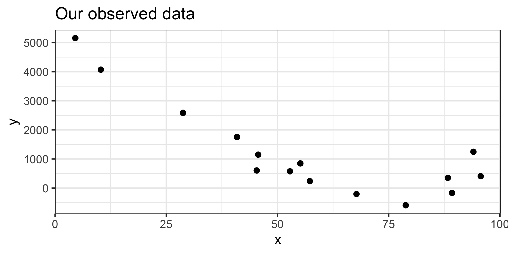
Goal: Build a model \(\displaystyle{\mathbb{E}\left[y\right] = \beta_0 + \beta_1 x}\) to explain / predict \(y\), given \(x\).
Generalized Goal: Build a model \(\displaystyle{\mathbb{E}\left[y\right] = \beta_0 + \beta_1 x_1 + \beta_2 x_2 + \cdots + \beta_k x_k}\) to explain / predict \(y\) given features \(x_1, \cdots, x_k\).
- \(\beta_i\)’s are parameters, learned from training data.
Model Fitting in Pictures
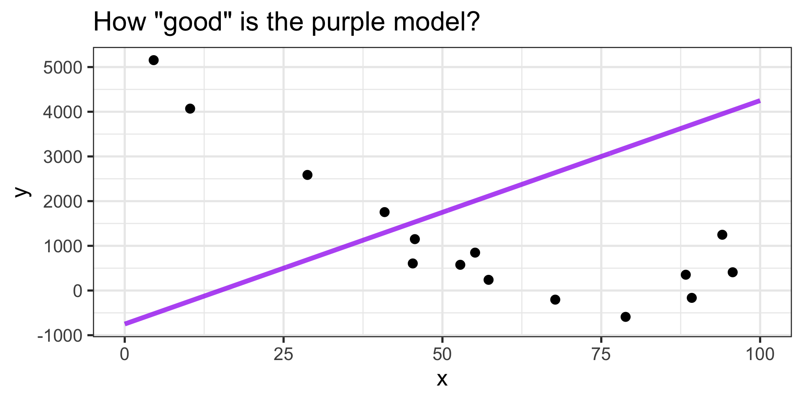
- This model doesn’t capture the general trend between our observed \(x\) and \(y\) pairs.
Model Fitting in Pictures
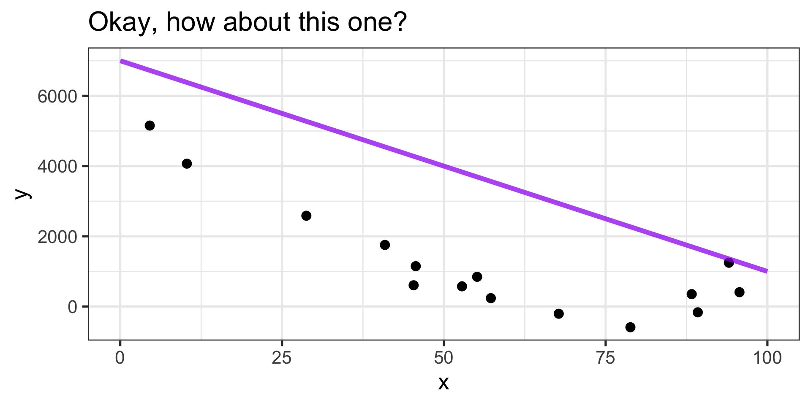
- Better job capturing the general trend (sort of).
- Larger \(x\) values are associated with smaller \(y\) values.
Model Fitting in Pictures
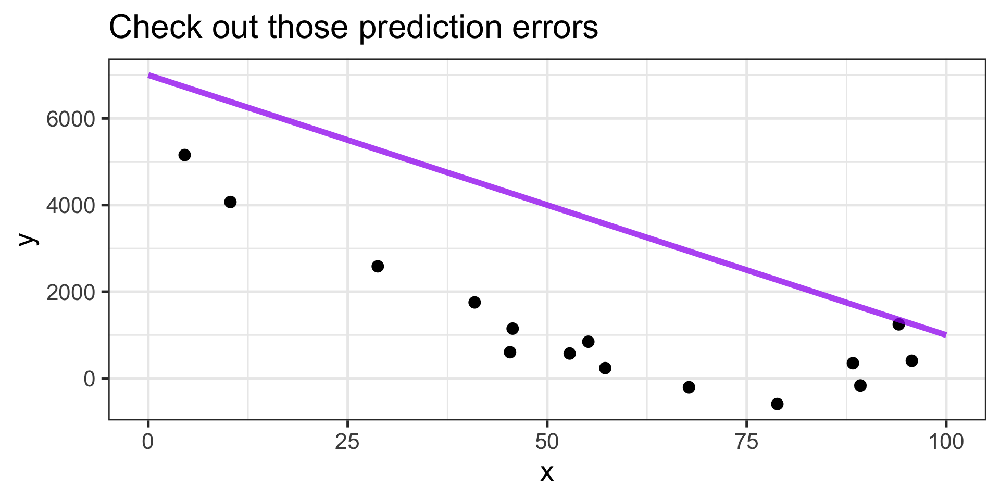
Model Fitting in Pictures
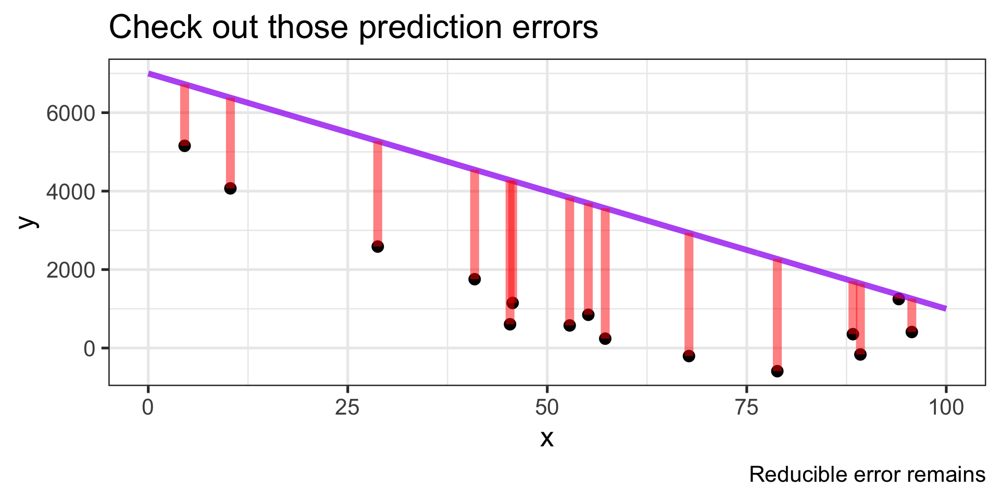
Always predicting too high!
- We should overpredict sometimes and underpredict others. The average error should be \(0\).
Model Fitting in Pictures
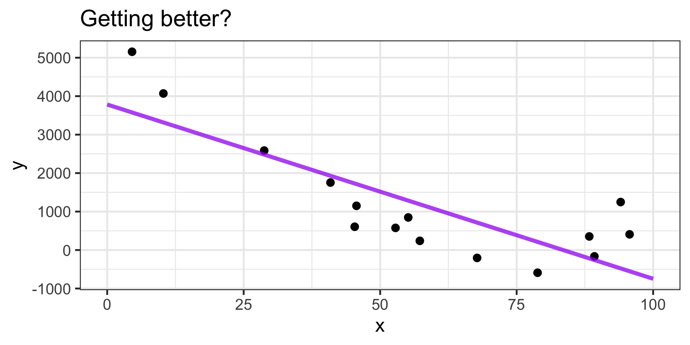
Model Fitting in Pictures
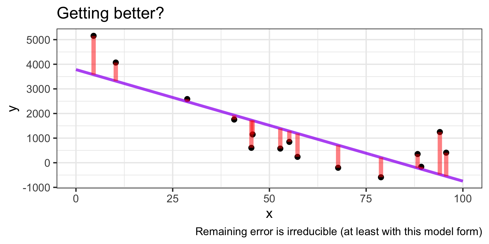
Model Fitting in Pictures
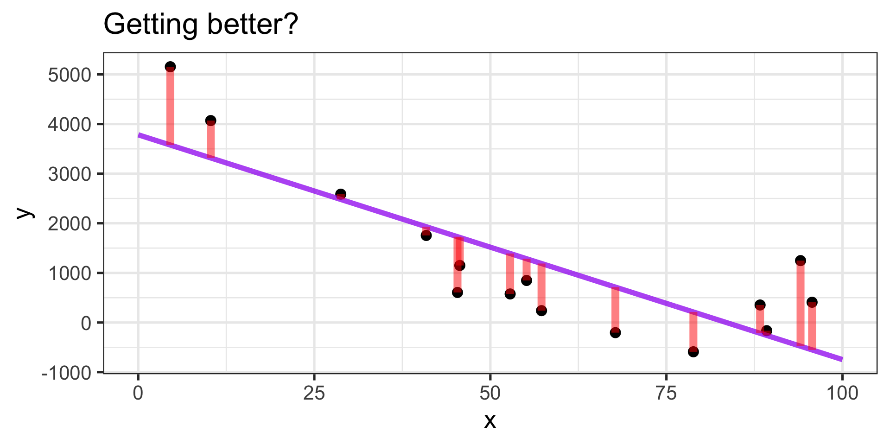
Capturing the general trend?
- …mostly
Balanced errors?
- ✓
How it works
In this case, we have \(\mathbb{E}\left[y\right] = \beta_0 + \beta_1\cdot x\) and we find \(\beta_0\) (intercept) and \(\beta_1\) (slope) to minimize the quantity
\[\sum_{i = 1}^{n}{\left(y_{\text{obs}_i} - y_{\text{pred}_i}\right)^2}\]
How it works
In this case, we have \(\mathbb{E}\left[y\right] = \beta_0 + \beta_1\cdot x\) and we find \(\beta_0\) (intercept) and \(\beta_1\) (slope) to minimize the quantity
\[\sum_{i = 1}^{n}{\left(y_{\text{obs}_i} - \left(\beta_0 + \beta_1\cdot x_{\text{obs}_i}\right)\right)^2}\]
- Changing \(\beta_0\) and/or \(\beta_1\) will change this sum.
How it works
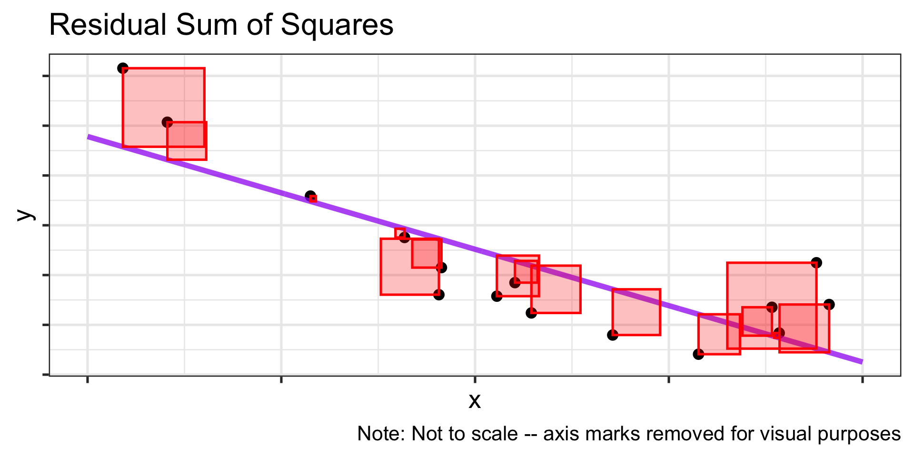
Interpreting the Model

\(\displaystyle{\mathbb{E}\left[y\right] = 3783.21 - 45.3\cdot x}\)
- The expected value of \(y\) when \(x = 0\) is \(3783.21\).
- As \(x\) increases, we expect \(y\) to decrease (on average).
- Given a unit increase in \(x\), we expect \(y\) to decrease by about \(45.3\) units.
Interpreting the Model
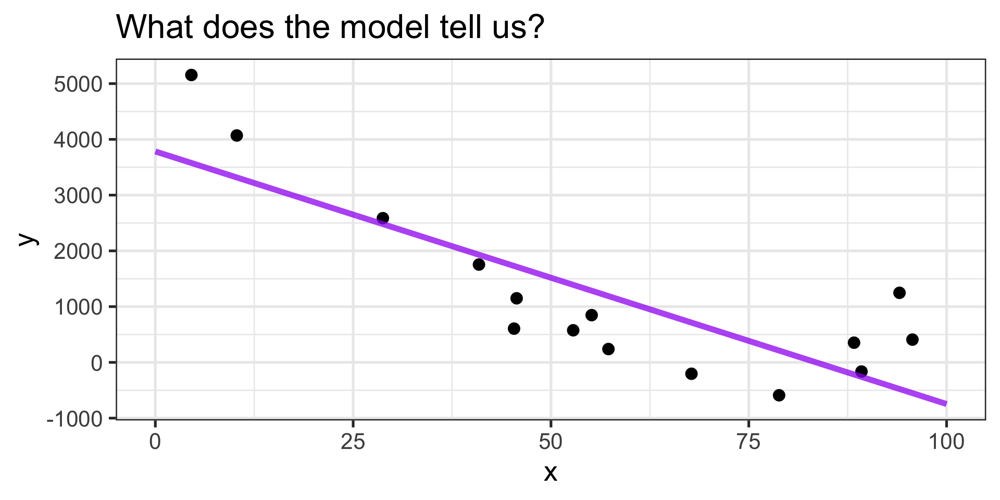
\(\displaystyle{\mathbb{E}\left[y\right] = 3783.21 - 45.3\cdot x}\)
- The expected value of \(y\) when \(x = 0\) is \(3783.21\).
- As \(x\) increases, we expect \(y\) to decrease (on average).
- Given a unit increase in \(x\), we expect \(y\) to decrease by about \(45.3\) units.
Approach to Model Interpretation: In general, we’ll interpret the intercept (when appropriate) and the expected effect of a unit change in each predictor on the response
Can we find a better model?
In the machine learning setting, we generally seek to improve the predictive performance of our models.
We do this by proposing different model forms.
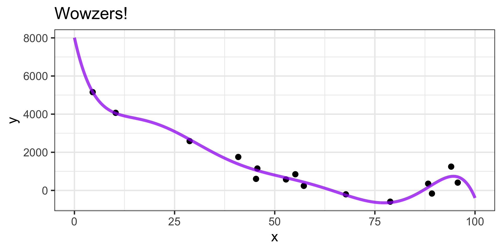
Can we interpret this model?
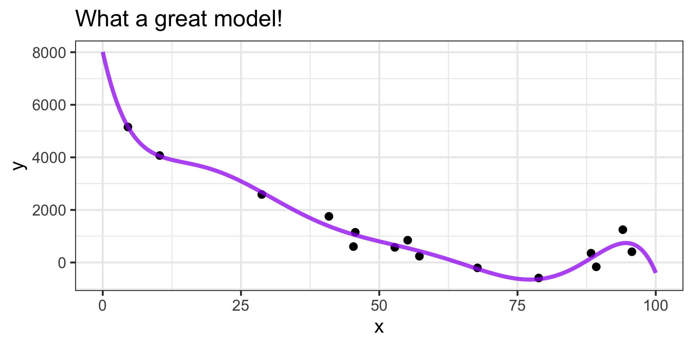
- The equation is \(\mathbb{E}\left[y\right] \approx 8011.8 - 956.3x + 90.6x^2 - 4.4x^3 +\\ 0.1x^4 - 0.002x^5 + 0.00001x^6 - 0.00000003x^7\)
…approximately - No thanks…
Do we expect this model to generalize well?
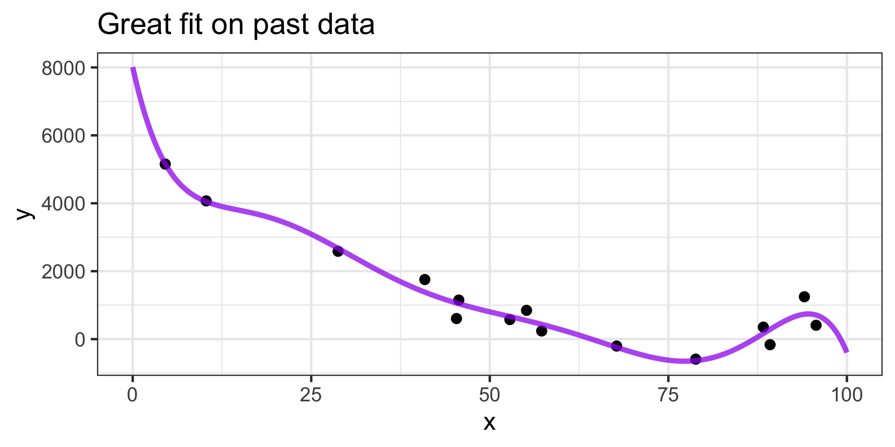
Do we expect this model to generalize well?
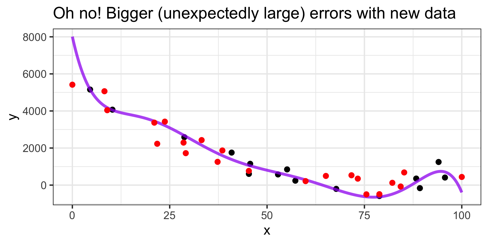
- Especially near \(x = 0\) and \(x = 100\)
Is there a happy medium?
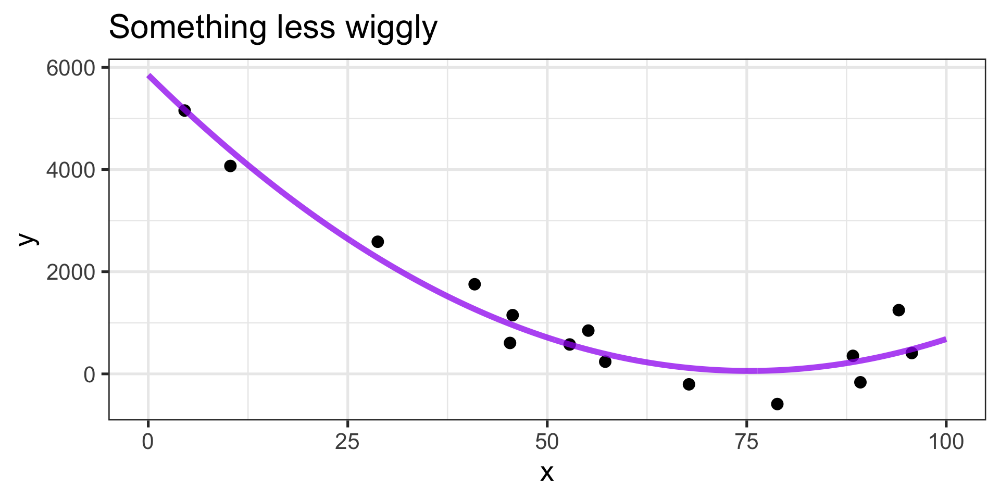
Is there a happy medium?
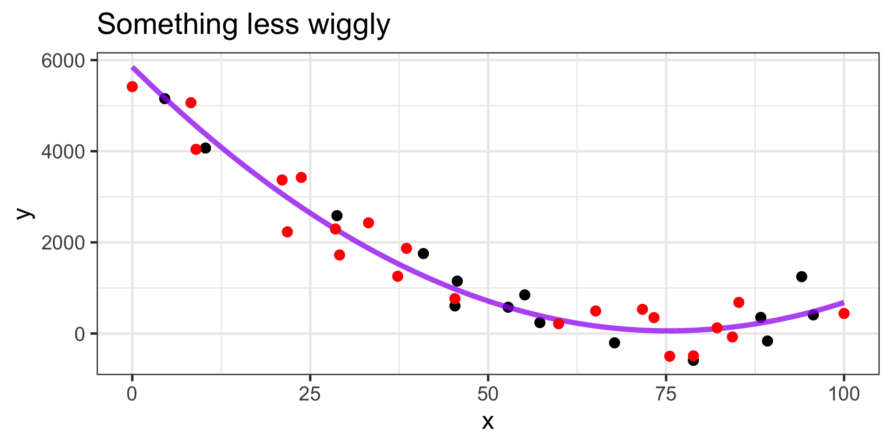
Fits old and new observations similarly well
Equation \(\displaystyle{\mathbb{E}\left[y\right] \approx 5850.33 - 153.82x + 1.02x^2}\)
- We’ll be able to interpret this
How do we know what model is right?
In the statistical learning setting, we hypothesize and justify the model form ahead of time.
In the machine learning setting, we test many models against one another in an effort to find a model that fits best, but this can lead to overfitting.
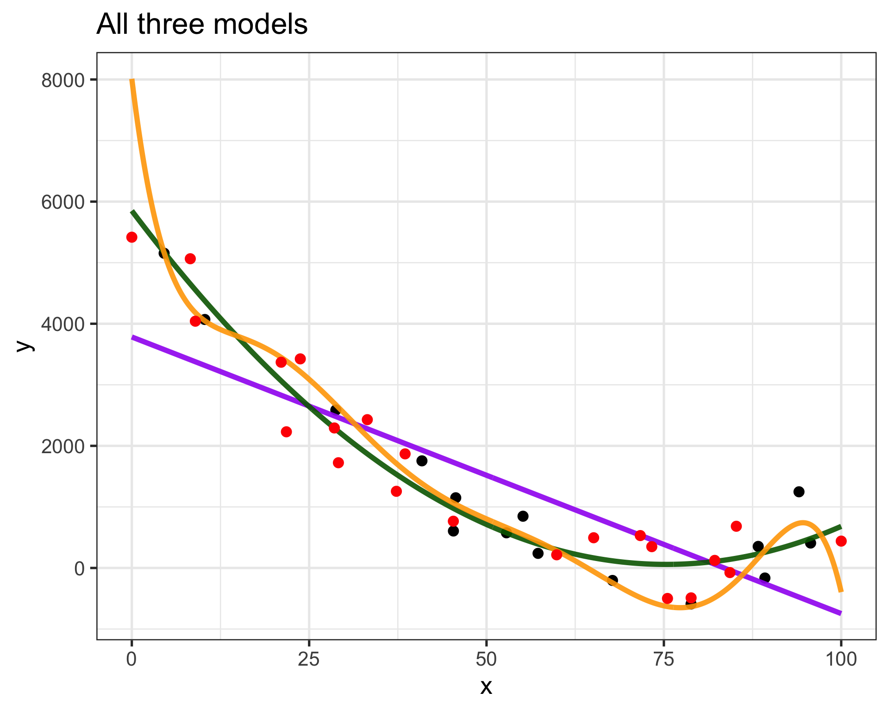
- The purple model is too straight
- The orange model is too wiggly
- The green model is just right
How do we know what model is right?
In the statistical learning setting, we hypothesize and justify the model form ahead of time.
In the machine learning setting, we test many models against one another in an effort to find a model that fits best, but this can lead to overfitting.
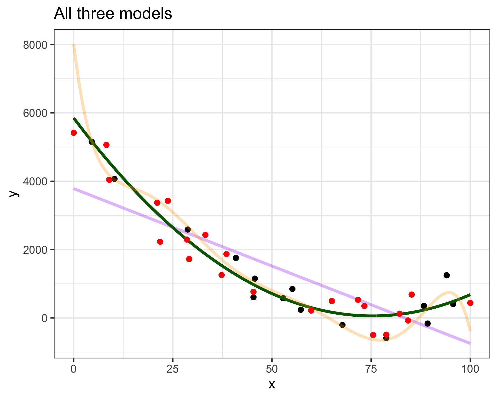
We don’t want to wait for new data to know we are wrong.
- Use some of our available data for training
- And the rest for validation
Okay, but our predictions are all wrong…literally!
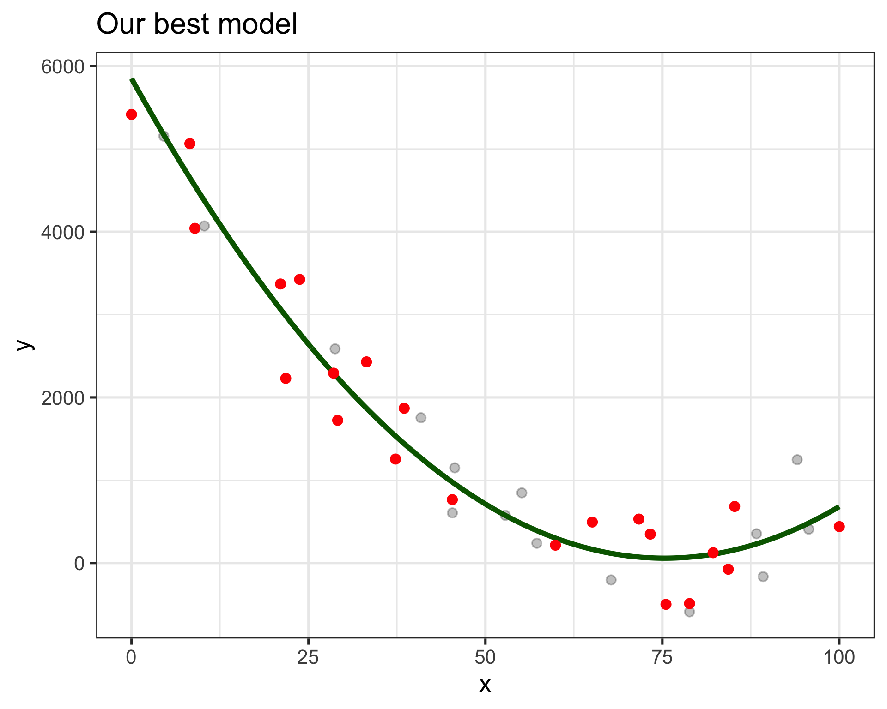
- “All models are wrong, but some are useful”, George Box (1976)
- Predictions will be wrong but, with some assumptions, they have value
Assumptions: What Needs to Be True?
Assumptions about the data:
The data used are random and representative of population that we want to make claims about (the actual population or the future cases we’ll make predictions for).
- Otherwise, we should not be modeling this way.
For model and predictions:
The model form captures the true average relationship between explanatory/predictor variables and the outcome/response.
Residuals (prediction errors) are normally distributed with mean \(\mu = 0\) and constant standard deviation \(\sigma\).
Residuals are independent of one another (watch out for time, location, or repeated measures on the same experimental unit).
- These assumptions allow construction of confidence intervals around predictions (making our models right).
For coefficient interpretation:
Explanatory variables are not too strongly correlated with one another (no multicollinearity).
- We need this for our inferences about associations to be trustworthy.
Summary
Building models \(\mathbb{E}\left[y\right] = \beta_0 + \beta_1 x_1 + \beta_2 x_2 + \cdots + \beta_k x_k\)
Explaining or predicting a numerical response (\(y\)) given features (\(x_i\))
- In statistical learning, we seek to interpret associations between explanatory variables and an outcome.
- In machine learning, we seek to predict a response given a set of associated predictor variables.
Need data to build the models
- The \(\beta_i\)’s are parameters whose values are learned/estimated from the data.
- In the machine learning setting, since we aren’t using a pre-determined model form, we need to have separate training and validation data for building and assessing models, to guard against overfitting.
Model predictions will be wrong
As long as the model form is appropriate, residuals (prediction errors) are independent and normally distributed, and the standard deviation of residuals is constant, we can build meaningful confidence intervals for predictions.
We can interpret our models to gain insight into relationships between explanatory variables and response
Competition Information
Predict medical insurance payouts
Response:
total_claimsPredictors: You have access to nearly 40 explanatory variables which could be useful in predicting the total cost of insuring a subscriber.
- Age and demographic information
- Household and regional characteristics
- Several risk factors
- Previous medical history
- Plan information
How this works
- Six assignments to guide you.
- You’ll take data provided by the insurance company and build models.
- Kaggle will assess the predictions generated by your models.
- A live leaderboard will let you know approximately where you stand, using a portion of the competition data.
- You’ll talk with one other about modeling ideas and performance differences.
- People might choose share their strategies, while others might not – this is a competition after all.
Clarification: All work submitted on these competitions must reflect your own analytical thinking and modeling decisions.
- It is acceptable to ask peers for advice and to share what they did, but direct model-based code-sharing is not permitted.
- Use of AI tools is limited to debugging or correcting errors in code that you have written.
- Using AI to generate models, analysis, or interpretations is inconsistent with the goals of these assignments, and is prohibited.
Why?
- Interest in homework assignments generally ends after they’re turned in and graded.
- The competition assignments and competitive environment ask you to iterate on previous work.
- You’ll almost surely be interested in what other people have done, especially if their models have performed better than yours.
- You’ll talk with one another about strategies and modeling choices.
- You’ll be motivated to improve your model even between assignments.
What past students say
- The competition is fun
- It is motivating
- I learned more because I wanted to place better in the competition
- Talking with others about their models made me more confident in my understanding of course material
What you are building
- An analytics report
- You’ll be building models and (more importantly) writing about your modeling choices and the performance of your models
- Six assignments – each focusing on part(s) of the modeling process and analytics report
- Prepares you for the final project, where you’ll do all this over again on a data set you identified and care about
Next Time…
- Way fewer slides! 🤕
- An introduction to R
- Getting our hands dirty!
Homework: Start Competition Assignment 1 – join the competition, read the details, download the data, and start writing a Statement of Purpose
Comments
Data-based models are often built for two competing purposes.
Inferential versus Predictive Models
There are two different circumstances from which we can come at statistics and data projects.
Exploratory versus Confirmatory Settings
Exploratory Settings: Where we don’t yet have well-defined expectations or formal hypotheses generated about associations, patterns, or relationships in our data.
Confirmatory Settings: Where we have generated formal hypotheses or perhaps [even better] officially pre-registered them prior to collecting any data.
The scenario we are in dictates the workflow we must use in order to conduct valid inference.